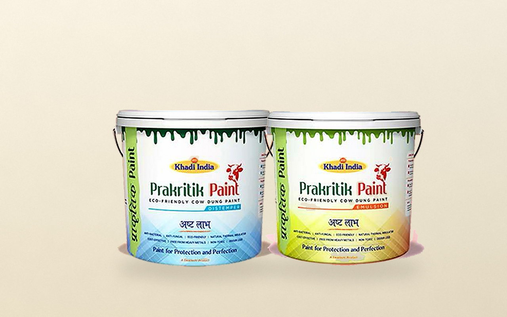

Documented outcome
Eco-Paints — where the direction became products.
The natural-coatings focus is the most developed: Prakritik Distemper and Prakritik Emulsion are documented, specified products — the reference point for how a research direction becomes a Gaurikrit family.
